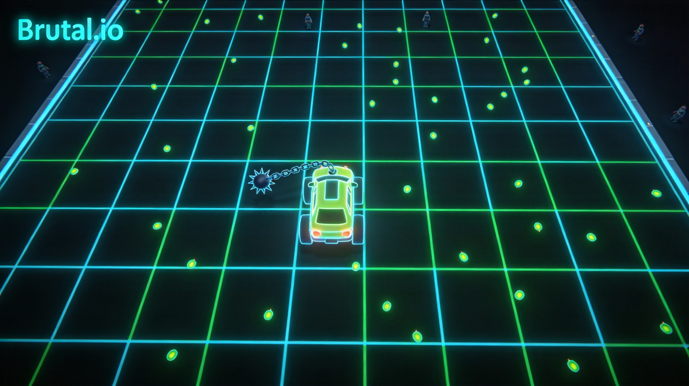
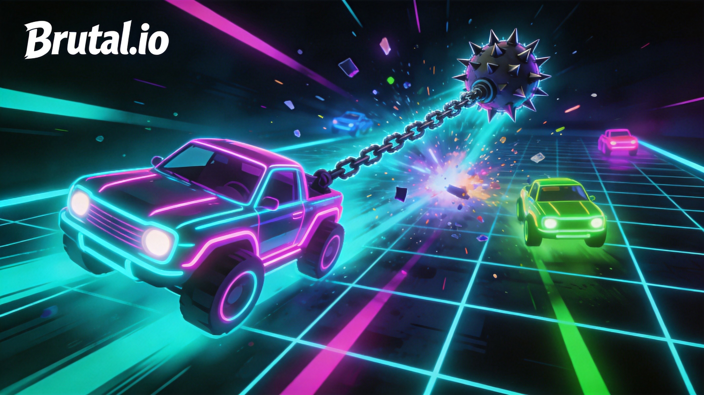
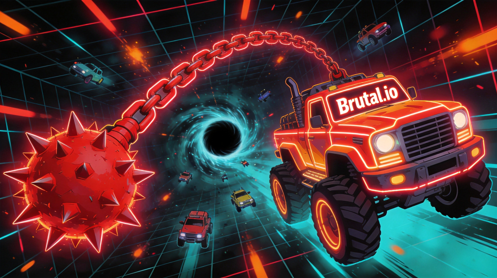

Introduction
Brutal.io is a fast-paced, physics-based multiplayer arena game where you control a neon vehicle dragging a massive, spiky flail on a chain. Developed by the creator of Wings.io, it stands out in the io genre by combining high-speed driving with satisfying, momentum-based combat. Players love the game for its chaotic, destructive gameplay and the unique challenge of mastering the flail's physics. You consume energy pellets and green monsters to grow your weapon's size and power, ultimately aiming to crush other players and dominate the neon arena. It offers an easy-to-learn, hard-to-master experience that delivers a raw, competitive thrill, making it perfect for quick sessions or grinding for the top of the leaderboard.
Getting Started

To start playing Brutal.io, simply load the game and spawn into the neon arena as a small vehicle with a tiny flail. Your primary controls involve using the mouse or keyboard to steer your car, while the spacebar is crucial for managing your weapon. The core mechanic revolves around dragging your spiky flail and using physics to swing it. Your immediate goal is to survive and grow by consuming scattered energy pellets and green monsters roaming the map. As you eat, your flail increases in size and damage. To attack other players, you must swing your flail into their vehicles. Be careful not to let your own flail hit your car, as this can cause self-damage or slow you down. Initially, stick to the outer edges of the map to safely gather energy and practice the momentum of your weapon before engaging in chaotic mid-game fights.
Basic Tips
1. Master the Swing: Do not just drag your flail; use your car's momentum to swing it in wide arcs, making it harder for enemies to dodge. 2. Farm the Edges: Start on the outer boundaries of the arena to safely collect energy pellets and green monsters without the threat of massive, high-ranking players. 3. Watch Your Flail's Position: Always be aware of where your weapon is. If you turn too sharply, your flail might lag behind and hit you, or get caught on map obstacles. 4. Target Smaller Players: When you are slightly larger than an opponent, aim to crush them to absorb the energy they drop, which rapidly accelerates your growth. 5. Avoid the Center Early: The center of the map features a Black Hole and aggressive Green Sentinels. Avoid this area until your flail is large enough to defend yourself.
Advanced Strategies

1. The Flicker Move: Rapidly tap the spacebar to keep your flail detached but close. This reduces the drag weight, allowing you to move up to twice as fast as players dragging a heavy weapon, perfect for chasing down targets. 2. Bounce Shots: Use the arena walls to your advantage by launching your flail at an angle so it ricochets off the boundary, catching wall-huggers off guard. 3. The Back-Door Recall: Leave your flail stationary near an entrance, then drive away to bait an enemy. When they chase your seemingly defenseless car, hold the recall button to shoot your flail across the screen at high speed, striking them from behind. 4. Flail Positioning Traps: Circle an opponent and position yourself so that when they recall their flail, it is forced to pass through a wall, causing them to fumble the physics and leaving them open.
Pro Tips

1. Zone with the Red Aura: Once you reach Rank 1, your flail turns red, making you the Equalizer. Use this massive, glowing weapon to zone out smaller players, controlling space rather than just chasing kills. 2. Baiting Sentinels: In the center arena, manipulate the aggro of the Green Sentinels. Lead a chasing enemy into their path so the Sentinels attack them, creating a distraction for you to land a fatal blow. 3. Perfect Ricochets: Master the physics of extreme angles. A perfectly timed ricochet off multiple walls can snipe a distracted high-ranking player before they can react to your approach.
Conclusion
Brutal.io perfectly blends physics-based driving with chaotic, weapon-swinging combat to create a uniquely satisfying io experience. By mastering your flail's momentum, utilizing advanced recall tricks, and understanding arena positioning, you can easily climb the leaderboard. Jump into the neon arena, embrace the brutal physics, and start crushing your way to the number one spot today!